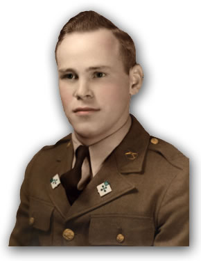
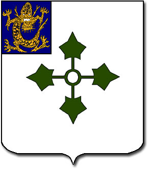
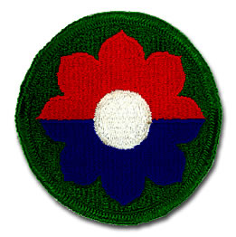

|
|
Welcome to VZW's Tribute to the 47th Infantry
Regiment and 9th Infantry Division! |
|
|
|
 |
|

tarlin Harry Hughes, Vincent
Z. Whaley's grandfather, served with the 47th "Raiders"
Infantry Regiment in the 9th "Octofoil" Infantry
Division during World War II. Private First Class Hughes
died June 11, 1994 — exactly 50 years to the day
when he stepped ashore Utah Beach in Normandy, France.
To the right is a picture of Pfc. Hughes donning two
47th Infantry regimental crests.
As my grandfather lay in the Intensive Care Unit of
the Veterans Affairs Medical Center, Mountain Home,
Tenn., in June 1994, I remembered the promise I had
made six months earlier on New Year's Day.
"Someday, I'm going to write a book about you,
papaw," I said.
"Well I don't know what you'd write about,"
he replied, grinning.
Neither did I, exactly, but I wanted to focus on his
combat experiences during World War II. There was just
one problem. I knew nothing of his role in the Second
World War. He was never able to talk about the war.
The mere mention of the words World War II sent him
tumbling into a black hole of horrifying memories, ending
in choking tears.
It was more than the frightful sadness in his eyes.
Scars from wounds he suffered in France on Friday, July
14, 1944, marked his upper lip and cheek. Another scar
received in Germany on Sunday, Oct. 1, 1944, branded
his leg.
From October 1941 to September 1945, Private First Class
Starlin H. Hughes trained and fought with the United
States Army from Fort Bragg, North Carolina, through
seven of the 9th Infantry Division's eight World War
II campaigns — Algeria-French Morocco, Tunisia,
Sicily, Normandy, Northern France, Rhineland, and Ardennes.
By war's end, Pfc. Hughes had acquired enough points
to return home and did not have to serve in the 9th's
final campaign of military occupation in Central Europe.
Throughout the war, Pfc. Hughes served in F Company,
47th "Raiders" Infantry Regiment, 9th "Octofoil"
Infantry Division.
By the grace and love of God, Hughes lived through one
of the mightiest endeavors this world has ever known
and returned home to participate in history's next big
event — the Baby Boom. Not long after walking the
final trail home in his native North Carolina, Starlin
Harry Hughes married his wartime sweetheart, Mildred
Louise Leonard, and conceived a daughter, Mollie, and
a son, Richard, respecitvely.
|  |
According to the book The
History of the 47th Infantry Regiment,
the original five-toed Imperial Chinese dragon
in the upper left-hand corner of the 47th Infantry
Regiment's regimental crest symbolizes the 9th
Infantry Division's accomplishments in the Boxer
Rebellion of 1900.
The book also states that the 47th was later formed
from the 9th Infantry Division. The green "Ivy"
cross is representative of the 47th Infantry Regiment
serving with the 4th "Ivy" Infantry
Division during World War I.
|
Throughout the rest of his life,
Hughes remained a lifetime member of the Disabled American
Veterans, Tennessee Post No. 13, and the Veterans of
Foreign Wars, John Sevier Post No. 2108, Johnson City,
Tenn.
Following 35 years of service as a nursing assistant,
Hughes retired from the same place he eventually drew
his last breath — the Veterans Affairs Medical
Center, Mountain Home, Tenn. He served the United States
and its military service veterans for approximately
40 years. Like many veterans, however, the U.S. government
forgot him and never sent the medals he so gallantly
earned during the Second World War.
Perhaps I realized the importance of my grandfather's
role in the war when my mother and father held a special
awards ceremony for him in 1988 after contacting the
government and requesting the medals he never received.
Although I was still very young, his streams of tears
and quivering lips and the bold medals and ribbons placed
before him explained that my grandfather had fought
in the bloodiest battles of World War II.
"There were a lot more men who sacrificed their
lives over there who deserve these medals more than
I ever will," Hughes said that day.
Hughes was awarded the Combat Infantryman Badge, Bronze
Star, Purple Heart with one Oak Leaf Cluster, Good Conduct
Medal, Distinguished Unit Badge, American Defense Service
Medal, American Campaign Medal, the European-African-Middle
Eastern Theater of Operations Medal with seven Bronze
Service Stars, and the World War II Victory Medal.
At an early age, I became fascinated with two things
— writing and the Second World War. When my grandfather
passed away during the worldwide 50th anniversary celebration
of D-Day, I realized the subject of my first book would
be the 9th Infantry Division in World War II. My motivation
was pushed even further when I discovered there were
no books on the "Old Reliables" currently
in print.
While my grandfather never spoke about his role in the
war, I have attempted to track down and interview surviving
veterans of the 9th Infantry Division who would be willing
to share their memories. I have also hoped I would find
someone who remembered my grandfather and could relay
anecdotes about his past.
|  |
According to Joseph B.
Mittelman's Eight Stars to Victory: A History
of the Veteran Ninth U.S. Infantry Division, "the
Octofoil dates back to the 15th century when it
was customary for each son to have an individual
mark of distinction.
"Perhaps Octo, meaning eight, is a bit confusing
to many when speaking of the Ninth Division. But
in foiling there are eight foils (positions) and
heraldic rules gave the Octofoil to the ninth
son, since it was symbolic of his being surrounded
by eight brothers; which is an explanation of
why this eight-petaled insignia is correct for
the Ninth Regular Army Division.
"The design chosen for the Ninth consists
of a red quatrefoil atop a blue quatrefoil with
a white center. The red stands for the artillery,
the blue for the infantry, and the white denotes
the color of numerals found on division flags.
Surrounding the Octofoil is a rim of olive drab
— symbolic of nothing else than the U.S.
Army."
|
To my greatest chagrin, I have
interviewed numerous 9th Infantry Division veterans
and none have remembered my grandfather. I suppose it's
because the majority of men with who he served were
killed in action. This has been verified by veterans
who recognized other soldiers depicted in photographs
with my grandfather. Please
click here to view photographs of my grandfather and
other soldiers during the war.
Nevertheless, had my grandfather been alive when I finally
decided to write a book, he would have declined an interview.
He felt inferior to GIs who fought and died in those
foreign lands to uphold peace and democracy worldwide.
"I'm not any better than any of those guys who
died for our country. I'm no better than any other man,"
Hughes said once.
Following my grandfather's death, I began research for
a book on the 9th Infantry Division in World War II.
By 1999, I had interviewed more than 50 "Octofoil"
veterans. I also traveled to Europe and interviewed
residents who lived in villages liberated by the "Old
Reliables." I am currently rewriting the history
of the 9th Infantry Division during World War II along
with testimonies from the men who were there and photographs
of the 9th's former battlefields and headquarters.
Veterans of the 9th Infantry Division who served with
the 39th "Falcons," the 47th "Raiders,"
or the 60th "Go-Devils" infantry regiments
during the Second World War are encouraged to contact
me, Vincent
Z. Whaley, for interviews. Until my book is published,
however, I hope the reference material and photographs
provided here will help anyone interested in this heroic
infantry division.
The gallant veterans who served their country during
the Second World War are slowly fading into history.
It will be left up to the younger generation
of family members and friends to keep their memories
alive.
If I can provide any additional information on the 47th
or the 9th, please send e-mail to tributes@whaley-computer-consulting.com
and I will supply as much information as possible.
I hope you enjoy visiting VZW's Tribute to the 47th
Infantry Regiment and 9th Infantry Division. Be
sure to visit a tribute to my father, Lewis D. Whaley,
at VZW's
Tribute to the 97th Signal Battalion, 596th Signal Support
Company.
Thank you for stopping by.
 |
|
|
|
|
|
|
|
|